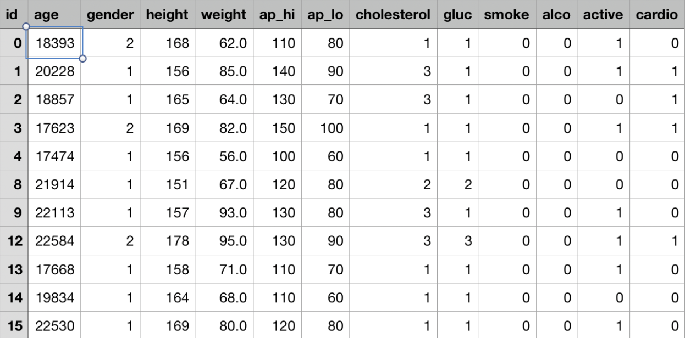

We can all agree that health and longevity are thoughts of the young and wise. With technology constantly advancing, we attempt to combine the two using machine learning algorithms and predictive models that can (hopefully) make it easier for consumers to identify health related issues. With today's more advanced technologies (Apple Watch, FitBit, etc.) it became easier for an everyday consumer to measure their health. In this project, we focus primarily on heart disease. However, we have future aspirations to include other health related issues like breast cancer and skin cancer. Other ideas stem from mental health issues that include datasets with features such as suicide rates and happiness levels.
Using the below cited datasets, we declare features that we feel are paramount to the predictive model. For example, age, sex, chest pain, resting blood pressure, cholesterol, fasted blood sugar, etc. Users of the application will be able to input answers to a general set of questions regarding the aforementioned features (in a survey format). These inputs will then run through the model, and the output will display a percentage prediction, similar to “You have a 3.18% chance of having Heart Disease! Well Done!”. Another added trait of this application is suggestions. For example, “You have a 78.42% chance of having Heart Disease! We suggest ample rest, less grease, non-stressful activities, and light exercise.”
Step 1: Clean the data, and ensure that the model is only using data that is essential to the results. This is solely for preparing the data that we think we can use for the models in Step 2.
Step 2: Define the features for the Predictive model. These features will need to take into account mental health issues as well because some heart-related events may include mental health measurements (i.e. depression).
Step 3: Test models. We expect to use Random Forest and Neural Networks (Deep Learning) to make predictions on identifying health issues.
Step 4: Analyze data and determine the best model. Although multiple models will be created, we expect to use the model(s) that best fits the features chosen.
Step 5a: Two people will create the website. The home page will contain a small summary and a welcome message to explain to the users what the application should be used for. Underneath this message will be a total of 10 questions. These questions will have a drop down menu with values ranging from “yes” and “no” variables, and numerical values. Depending on the values inputted by the user, a prediction will be displayed once prompted. This website will display a pleasing and easily understood UI.
Step 5b: The third member will create a database that is interactive with the website. It is this individual’s responsibility to make sure the database is callable from the official website.
Step 6: Finalization. Fix any loose ends and (possibly) create a presentation.
https://www.kaggle.com/ronitf/heart-disease-uci
https://data.world/xprizeai-health/heart-disease
https://www.kaggle.com/sulianova/cardiovascular-disease-dataset